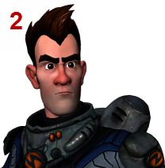

线性工作流是一种进行着色、照明和渲染的方法，与直接使用原始的非线性视频值相比，它具有许多优势。颜色管理通过正确转化输入、渲染、显示和输出颜色实现线性工作流。
但是，有关“线性工作流”的许多可用信息实际上描述了简单的“de-gamma 和 re-gamma”工作流。从渲染空间准备颜色值以进行显示的正确视图变换应包括具有摄影响应的色调贴图。
在现实世界中，灯光以线性方式相加。这意味着，如果使用两个光源，则总亮度为每个灯光亮度直接相加之和。
几乎所有 3D 渲染器使用的算法都按照同样的方式工作。线性工作流通过确保渲染过程中使用的所有颜色值与场景中的亮度成正比，确认了这一事实。这解决了许多照明和着色问题。例如，可以更轻松地实现宜人的照明效果，保持高光和阴影之间的良好平衡，而无需使用额外灯光等技巧。此外，线性输出适合合成等进一步的处理，而无需额外的调整和校正。
线性工作流的一个问题是，已准备好显示的图像（如，用作纹理的 .png 文件）不是线性的。换句话说，数字颜色值与亮度不成比例。这意味着必须对其进行转化或变换，然后才能用于线性工作流。
反过来，线性工作流的渲染结果是线性的，不适合直接显示。也需要对其进行变换，然后才能在显示器上正确显示。
处理输入图像（如纹理）的正确方法取决于在场景中如何使用图像。还取决于图像本身，包括图像当前的颜色空间、编码和图像状态（图像的颜色值是与场景相关的亮度值成比例，还是与显示相关的亮度值成比例）。
用于非颜色数据的图像不应应用任何变换。这包括凹凸、法线、置换贴图，以及用于其他属性（如半透明、镜面反射度、反射率等）的贴图。
对于用于表示颜色的图像，存在几种可能性。已经场景线性的图像不需要任何转化，只是可能需要从输入空间的主颜色转化为渲染空间的主颜色（如果它们不同）。这包括大多数高动态范围图像，如 OpenEXR、HDR 和一些 TIFF 文件。
使用特定设备捕捉的图像应该应用特定于该设备的输入变换。这包括数字电影摄影机拍摄的片段，以及来自 ADX 校准的扫描仪的胶片板。其他类型的扫描胶片板通常需要某种形式的对数到线性变换。
已经准备好显示的图像应移除 Gamma。这适用于许多常用的图形格式，包括 JPEG、PNG、BMP、Targa 和一些 TIFF 文件。但是，请务必注意，在移除 Gamma 后，颜色值与显示的亮度成线性正比，而非与场景的亮度成线性正比。在某些情况下，还需要通过应用反向色调贴图，使值成为场景线性。在其他情况下，反向色调贴图可能会创建大于 1.0 的值，这不适用于漫反射率（漫反射系数）、透明度和其他贴图的颜色。
若要显示场景线性图像，必须对它进行转化以供查看或输出。此变换通常涉及两个步骤：
3D 场景模拟真实世界，主要体现在存在范围非常广泛的亮度值。另一方面，由于最大值编码为 1.0，因此显示设备可以输出的亮度值范围有限。另外，通常在比户外场景更暗或者比明亮的电影布景更暗的照明环境下查看显示设备。出于此原因，通过生成合适图像的摄影响应，使用色调贴图将高动态范围值压缩到显示范围内。通常色调贴图应用 S 形曲线，提高对比度和饱和度以补偿较低动态范围和暗淡的查看环境。
只应用 Gamma 不足以充分准备场景线性图像以供显示。不使用色调贴图，大于 1.0 的颜色值将保持大于 1.0，并且被显示器剪裁。
